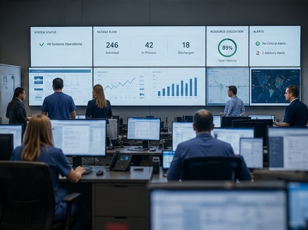

Listen before prescribing.
The people closest to the work usually know where the friction lives.
OPERATIONAL EXCELLENCE · ORGANIZATIONAL DESIGN · AI-ENABLED OPERATIONS
Change the system, and the outcomes follow.
Senior healthcare operations executive with extensive experience leading enterprise transformation, operational excellence, governance, AI-enabled operations, and organizational change across complex healthcare organizations.
THE PERSON BEHIND THE WORK
Operational systems leader, builder, and executive partner.
For more than three decades, I have helped programs, departments, and organizations understand how they actually operate, remove the constraints limiting performance, and build practical systems that improve execution, visibility, and measurable outcomes.
Organizations have repeatedly trusted me at major inflection points—from Y2K and enterprise infrastructure to healthcare digitization, governance, business intelligence, and now artificial intelligence. The technologies change. My assignment remains the same: redesign the operating system so people, process, and technology can produce better results together.
Leadership Philosophy
I do not enter an organization looking for a methodology to impose. I listen, validate what is true, and understand why the current system produces the results it does.
The people closest to the work usually know where the friction lives.
Reporting should clarify reality—not create another version of it.
Information should exist once. Every other view should derive from it.
Strong systems reduce dependence on extraordinary effort and heroic recovery.
Technology—and AI—should strengthen operations, judgment, and outcomes.
SELECTED EVIDENCE
WHERE I HAVE APPLIED IT
Stabilizing customer operations, restoring SLA performance, and rebuilding confidence through evidence and disciplined execution.
Motorola · McKesson · Enterprise ClientsRedesigning implementation models, leading complex healthcare programs, and integrating acquired operations.
MediServe · Dignity Health · ZensarTurning fragmented reporting into authoritative operational visibility that improves executive decisions and customer value.
McKesson Specialty Health · Pharmaceutical ManufacturersDesigning change control, contract renewal, audit readiness, risk visibility, and cross-functional decision systems.
RxCrossroads · CoverMyMedsApplying AI to structured intake, risk analysis, decision support, communication, and workflow—not novelty for its own sake.
Change Control Central · Waypoint WorkflowsENTERPRISE PLATFORMS
Technology is only valuable when it enables better business outcomes. Throughout my career, I have led transformation initiatives spanning clinical systems, enterprise applications, collaboration platforms, operational intelligence, and AI-enabled business capabilities.
REPRESENTATIVE ENTERPRISE ENVIRONMENTS
McKesson · CoverMyMeds · RxCrossroads · Dignity Health · Cleveland Clinic · Multi-hospital health systems
Nortel Networks · Dell Computer · Motorola · Navy Marine Corps Intranet · Large-scale implementation programs
Enterprise PMOs · Shared services · Executive governance · Program recovery · M&A integration · AI-enabled operations
My experience extends beyond individual technologies. I design the operating models, governance structures, and cross-functional workflows that allow organizations to realize the full value of their enterprise platforms.

A PRACTICAL PERSPECTIVE
“Technology has never been the center of my career. Organizations have.”
I have watched organizations invest enormous amounts of time and money into technology with the expectation that software would solve operational problems. Sometimes it helped. Often it simply accelerated existing strengths—or existing weaknesses.
The organizations that consistently succeed understand how work should flow, how decisions should be made, how accountability should be established, and where technology can create meaningful leverage.
Today's defining inflection point is artificial intelligence. The challenge is not simply adopting AI—it is designing the operating system that allows people and AI to work together effectively. The technology is new. Helping organizations adapt through consequential change is not.
Design that well, and everything else becomes easier.Every organization already has an operating system.
Some are intentional.
Most simply evolved.
That difference determines the results.LET'S CONNECT
I am most valuable when an organization needs clearer execution, stronger operational visibility, practical transformation, or a thoughtful path for applying AI.